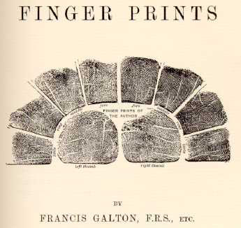
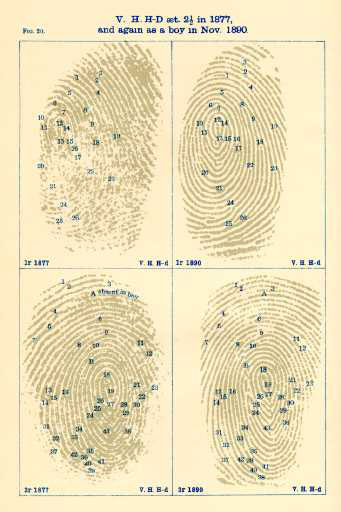

|
[Galton
displayed his own fingerprints as part of his title page.
His Introduction begins by calling his readers' attention
to "the so-called papillary ridges." Wilson's introduction
of fingerprints at the trial is MT's version of the
following paragraph, the second in Galton's book:]
Let no one despise the ridges on account of their smallness, for they are in some respects the most important of all anthropological data. We shall see that they form patterns, considerable in size and of a curious variety of shape, whose boundaries can be firmly outlined, and which are little worlds in themselves. They have the unique merit of retaining their peculiarities unchanged throughout life, and afford in consequence an incomparably surer criterion of identity than any other bodily feature. They may be made to throw welcome light on some of the most interesting biological questions of the day, such as heredity, symmetry, correlation, and the nature of genera and species. A representation of their lineations is easily secured in a self-recorded form, by inking the fingers in the way that will be explained, and pressing them on paper. There is no prejudice to be overcome in procuring these most trustworthy sign-manuals, no vanity to be pacified, no untruths to be guarded against. (Pp. 1-2) [It's not clear what Galton means by "prejudice" in the above. In fact throughout his book a strong connection is maintained between fingerprints and race. The first use of fingerprints for identification was by the British raj in India. In the paragraph below Galton connects his subject explicitly up with the subjects of imperialism. He is saying that fingerprints are especially useful in the colonies, where "they" all look alike and are all liars!] In the tenth chapter we come to a practical result of the inquiry, namely, its possible use as a means of differentiating a man from his fellows. In civil as well as in criminal cases, the need of some such system is shown to be greatly felt in many of our dependencies; where the features of the natives are distinguished with difficulty; where there is but little variety of surnames; where there are strong motives for prevarication, especially connected with land-tenure and pensions, and a proverbial prevalence of unveracity. (P. 14) [Galton's book includes a number of tables and illustrations, including this proof of the way a child's fingerprints remain the same over time (left). Later in the Introduction Galton indicates how his original interest in fingerprints was linked to an idea that they might serve to establish definitive racial differences.] In the twelth chapter we come to a branch of the subject of which I had great expectations, that have been falsified, namely, their use in indicating Race and Temperament. I thought that any hereditary peculiarities would almost of necessity vary in different races, and that so fundamental and enduring a feature as the finger markings must in some way be correlated with temperament. The races I have chiefly examined are English, most of whom are of the upper and middle classes; the others chiefly from London board schools; Welsh, from the purest Welsh-speaking districts of South Wales; Jews from the large London schools, and Negroes from the territories of the Royal Niger Company. I have also a collection of Basque prints taken at Cambo, some twenty miles inland from Biarritz, which, although small, is large enough to warrant a provisional conclusion. As a first and only an approximately correct description, the English, Welsh, Jews, Negroes, and Basques, may all be spoken of as identitical in the character of their finger prints; the same familiar patterns appearing in all of them which much the same degrees of frequency, the differences between groups of different races being not larger than those that occasionally occur between groups of the same race. The Jews have, however, a decidedly larger proportion of Whorled patterns than other races, and I should have been tempted to make an assertion about a peculiarity in the Negroes, had not one of their groups differed greatly from the rest. The task of examination has been laborious thus far, but it would be much more so to arrive with correctness at a second and closer approximation to the truth. It is doubtful at present whether it is worthwhile to pursue the subject, except in the case of the Hill tribes of India and a few other peculiarly diverse races, for the chance of discovering some characteristic and perhaps a more monkey-like pattern. (Pp. 17-18) [In Chapter XII, "Races and Classes," Galton develops in a bit more detail his expectations about the relationship between those categories and the innate identity encoded in fingerprints. Like most 19th century discussions on the subject, Galton's confuses nationality with race, and assumes his own racist predispositions are "reasonable." To his credit, though, he accepts the fact that there is no empirical basis for racial discrimination based on fingerprints.] It requires considerable patience and caution to arrive at trustworthy conclusions, but it may emphatically be said that there is no peculiar pattern which characterises persons of any of the above races [i.e. English, pure Welsh, Hebrew, Negro and Basque]. There is no particular pattern that is special to any one of them, which when met with enables us to assert, or even to suspect, the nationality of the person on whom it appeared. The only differences so far observed are statistical, and cannot be determined except through patience and caution, and by discussing large groups. I was misled at first by some accidental observations, and as it seemed reasonable to expect to find racial differences in finger marks, the inquiries were continued in varied ways until hard fact had made hope no longer justifiable. (Pg. 192-93) [As if determined to discriminate between races even in the face of the evidence, Galton did "find" the following "evidence." He does not give any illustration to support this finding, however.] The number of instances is of course too small for statistical deductions, but they served to make it clear that no very marked characteristic distinguished the races. The impressions from Negroes betray the general clumsiness of their fingers, but their patterns are not, so far as I can find, different from those of others, they are not simpler as judged either by their contours or by the number of origins, embranchments, islands, and enclosures contained in them. Still, whether it be from pure fancy on my part, or from the way in which they were printed, or from some real peculiarity, the general aspect of the Negro print strikes me as characteristic. The width of the ridges seems more uniform, their intervals more regular, and their courses more parallel than with us. In short, they give an idea of greater simplicity, due to causes that I have not yet succeeded in submitting to the test of measurement. (Pg. 195-96) [Galton goes on briefly to admit that, although he compared "art-students" and "science-students" with "the worst idiots in the London district," he has found "no notable difference" in fingerprints on any "class" basis.] |